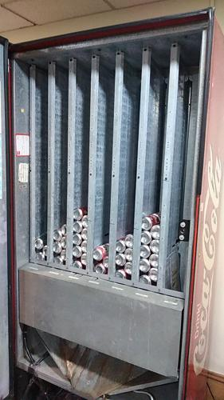
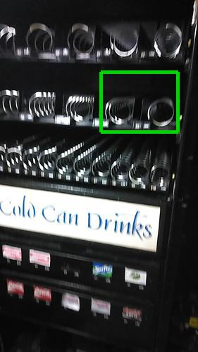

Antes de AbastecerNo se detectaron espirales vacios.

id 408.527 |
Luego de AbastecerSe detectó 1 espiral vacio.

id 408.528 |
|
| | Sin reportes previos. |
|
Sin registro de abastecimiento. | Productos más abastecidos en últimas 6 semanas:
| Nro. Abast |
Qty/Abast |
Producto |
Abast hace (días) |
Fecha |
| Productos menos abastecidos en últimas 6 semanas:
| Nro. Abast |
Qty/Abast |
Producto |
Abast hace (días) |
Fecha |
|
|